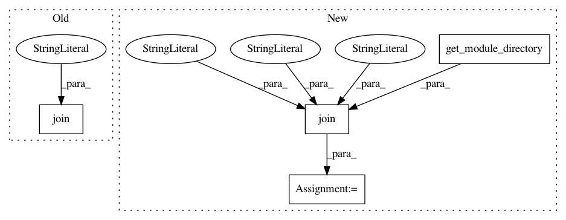

0037bf2ef173d8e7dabf3e71c9c4783424e855d0,nilmtk/dataset_converters/greend/convert_greend.py,,convert_greend,#Any#Any#Any#,114
Before Change
// retrieve the dataset metadata in the metadata subfolder
convert_yaml_to_hdf5(
join(dirname(inspect.getfile(convert_greend)), "metadata"),
hdf_filename
)
After Change
store.close()
// retrieve the dataset metadata in the metadata subfolder
metadata_dir = join(get_module_directory(), "dataset_converters", "greend", "metadata")
convert_yaml_to_hdf5(metadata_dir, hdf_filename)
//is only called when this file is the main file... only test purpose
if __name__ == "__main__":
In pattern: SUPERPATTERN
Frequency: 3
Non-data size: 4
Instances
Project Name: nilmtk/nilmtk
Commit Name: 0037bf2ef173d8e7dabf3e71c9c4783424e855d0
Time: 2018-09-09
Author: 10246101+PMeira@users.noreply.github.com
File Name: nilmtk/dataset_converters/greend/convert_greend.py
Class Name:
Method Name: convert_greend
Project Name: nilmtk/nilmtk
Commit Name: 0037bf2ef173d8e7dabf3e71c9c4783424e855d0
Time: 2018-09-09
Author: 10246101+PMeira@users.noreply.github.com
File Name: nilmtk/dataset_converters/dataport/download_dataport.py
Class Name:
Method Name: download_dataport
Project Name: nilmtk/nilmtk
Commit Name: 0037bf2ef173d8e7dabf3e71c9c4783424e855d0
Time: 2018-09-09
Author: 10246101+PMeira@users.noreply.github.com
File Name: nilmtk/dataset_converters/iawe/convert_iawe.py
Class Name:
Method Name: convert_iawe